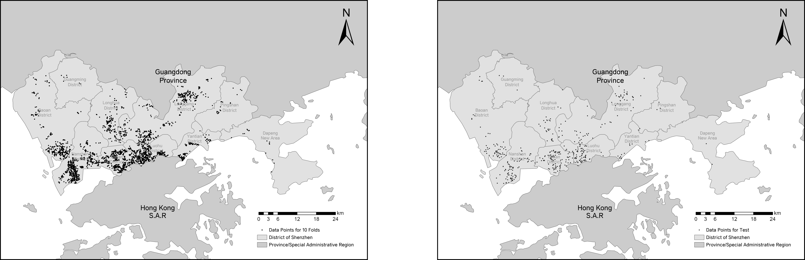
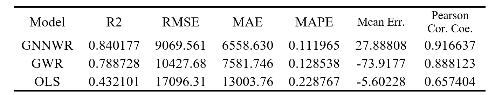
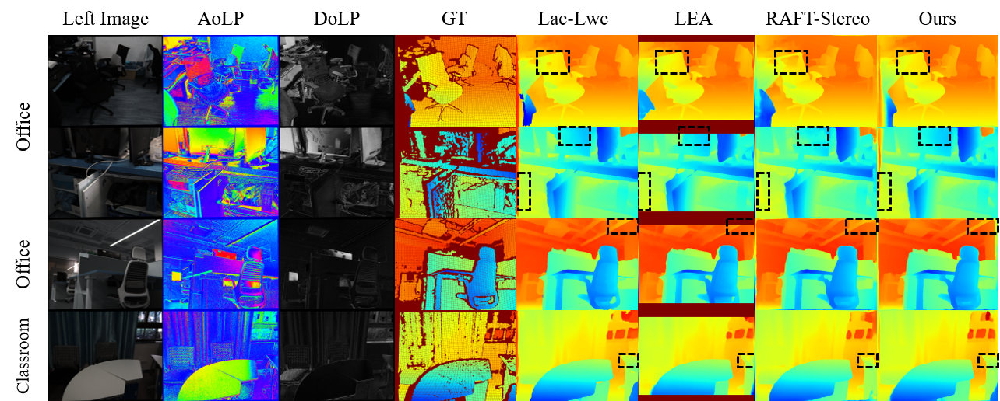
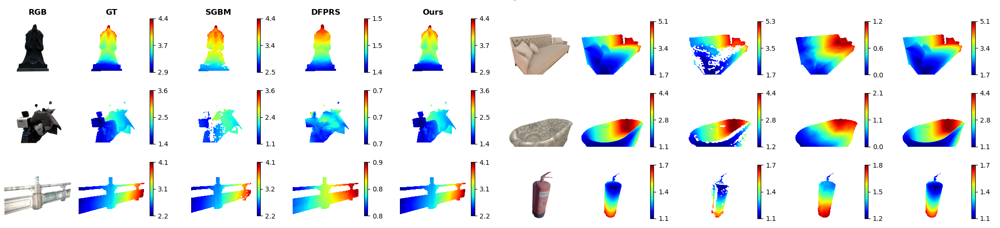

Zimo Wang
Hi, I am Zimo Wang (王子墨), a first-year Data Science Ph.D. student at University of California, San Diego. I graduated from Zhejiang University, where I was learning and working at statistical learning, computer graphics, etc.
I am proficient in techniques about Geographical Information Science (rank 1st), Statistics (rank 1st) and Computer Science. I am excited to conduct research which is effectively inspired by mathematics and powerful for tangible applications, especially in computer graphics and data science. Equipped with solid mathematical fundamentals and data analysis techniques, I believe I'm capable of facing challenges and making contributions to these realms in the future.
Email: zimowang at ucsd dot edu / Wechat: wzm805350332 / CV (outdated) / Transcript
Languages: C/C++ / JAVA / Python / SQL / R
Platforms: ArcGIS / Matlab / Postgre
Education
2023 - Now: Data Science PhD Candidate, University of California San Diego
I am very fortunate to receive the guidance from professor Biwei Huang during my first rotation!2019 - 2023: Majoring in Geographical Information Science, Zhejiang University
GPA: 3.97/4.0 (90.24/100), rank 1/35.
I have gotten full grades (4.0) in Spatial Data Analysis, Computer Graphics (96/100), Geospatial Database (97/100), Scientific Computing, Data Structures (96/100), C Programming (for 2 semesters), Remote Sensing Digital Image Processing, GIS Application, Data Mining, JAVA Programming (95/100).
2019 - 2023: Double Majoring in Statistics, Zhejiang University
I have gotten full grades (4.0) of all the required courses, including Mathematical Analysis (for 3 semesters, II 99/100), Advanced Algebra (for 2 semesters, II 97/100), Probability Theory, Ordinary Differential Equations (100/100), Computer Simulation, Complex Variable Functions, Stochastic Processes (95/100), Regression Analysis (96/100), Time Series, Financial Mathematics, Mathematical Statistics (98/100).
2019 - 2023: Minoring in Computer Science and Technology, Zhejiang University
The courses: Advanced Data Structure & Algorithm Analysis (93/100, rank 16/551), Advances in Computer Graphics (100/100), Object-Oriented Programming (95/100), Operating System, Theory of Computation, Artificial Intelligence.
Research
A House Price Valuation Model Based on Geographically Neural Network Weighted Regression

Zimo Wang, Yicheng Wang, Sensen Wu, Zhenhong Du. ”House Price Valuation Model Based on Geographically Neural Network Weighted Regression: The Case Study of Shenzhen, China” ISPRS International Journal of Geo-Information 11, no. 8: 450. Published. 2022.
Advisor: Sensen Wu and Zhenhong Du | Zhejiang Provincial Lab. of Geographical Information Science
Intrigued by the course Spatial Data Analysis, I started to find an advisor to do some research using spatial data, combining the statistic and AI tools. Then I fortunately got help from Prof. Sensen Wu and Zhenhong Du who work at Zhejiang Provincial Laboratory of GIS. As the leader of this research, I initialized it in April 2021 and had finished the writing at the end of 2021. The model we called GNNWR is not complicated but innovative. Some former research cannot combine the artificial intelligence methods with the spatial data analysis very well, however, we put forward a neural network to predict the fluctuation of the coefficients in the regression model when the geographical coordinate varies, which has been proved valid, practical, and efficient.
I built this framework on my own, including crawling the house price data in Shenzhen, constructing the network, and analyzing the error. In November 2021, a sophomore schoolmate was introduced by my advisor to help me visualize the data and typeset the paper, and the research progressed very fast. Our research has deeply improved the model GNNWR, not only utilized it in socioeconomic field, but also perfected the examination process.
On the 10-fold validation sets (merged), our model GNNWR beats all the traditional models including geographical weighted regression and ordinary least squares regression. Now, I have had finished this research, the paper is published in ISPRS International Journal of Geo-Information. Have been researching for about a year, I learned a lot from my advisor and gained a lot from courses like Regression Analysis and Artificial Intelligence. I'm ready to design other neural networks, and process more complex data.
Deep Polarimetric Stereo Depth Estimation

Chaoran Tian, Weihong Pan, Zimo Wang, Mao Mao, Guofeng Zhang, Hujun Bao, Ping Tan, Zhaopeng Cui. ”DPS-Net: Deep Polarimetric Stereo Depth Estimation” IEEE International Conference on Computer Vision. Published. 2023.
Advisor: Zhaopeng Cui | State Key Laboratory of CAD&CG
I have taken some basic courses guiding me to dig deeper into the computer vision realm. Not only some data structure and algorithm courses, but Computer Graphics, Digital Image Processing, and Contemporary Surveying also empower my computer vision career.
In the summer vacation of 2021, with the support of Prof. Zhaopeng Cui, I fortunately attended a group focusing on 3D reconstruction with polarization information. From weekly meetings, everyone in this group gave me warm guidance and instruction, and now our paper is under review for CVPR, for which I made my contributions as the third author. Finally, with the help of polarization images, our model opens up a new task and outperforms all the other depth estimation models as you can see below. This internship significantly helped me manipulate the tools in ML about Linux and PyTorch.
 Our model generates the best prediction on both real and synthesized data with accurate and sharp disparity! Further quantitative comparisons also prove our superiority.
The deep involvement of this research enabled me to learn how to collect research images, prepare group meetings, and reference other models. Moreover, due to my background in computer graphics, I also explored the synthesis pipeline in UE4 to generate our data. As the third author, I provided valuable ideas as well when we modified our model and paper.
Spatial-Temporal Data Mining on Traffic Datasets
Advisor: Hanghang Tong | IDEA Lab of University of Illinois at Urbana-Champaign
As a student learning GIS tools, statistical principles, and programming techniques, it is so attractive for me to do some geospatial data mining work in the top data mining group. That's why I reached out to Prof. Hanghang Tong at UIUC and want to participate in their cutting-edge research. Fortunately, he offered me this valuable chance to learn how to predict the traffic flow with the help of GCN, GAT, and the Transformer model.
During the summer vacation of 2022, with the support of Prof. Hanghang Tong, I worked with Doctor Baoyu Jing to study METR-LA dataset of Los Angeles. I was inspired by the latest model Autoformer, which used Fourier Analysis to perfectly predict the time series. I realized that this idea might be an impressive breakthrough, and did more theoretical analysis on that. The time lag can be utilized to compensate for the differences of traffic flow phases, and the upstream and downstream relationships could be naturally deduced from the time lags.
In the future, I intend to study more social data, with the help of remote sensing and mobile devices, to benefit our city and its citizens. For example, we can predict house prices more precisely, and we can also use remote sensing images to analyze, visualize, and measure our traffic patterns.
Awards
AT THE UNIVERSITY
National Scholarship, Ministry of Education of P.R. China
Zhejiang University Scholarship - First Prize
National Geographical Information Science Application Competition 2021 - Grand Prize
Zhejiang University Art Avant-garde (2021)
AT THE SENIOR HIGH SCHOOL
Chinese National Astronomy Olympiad 2018 - Silver Award
Zhejiang Provincial Astronomy Olympiad 2017 - First Prize
Gallery


Hobbies
I enjoy all kinds of music, ranging from classical to popular. I can play some simple guitar pieces, and I am a violin amateur. At Zhejiang University, I have taken various music courses and lectures, including solfeggio, violin, and western music history. Musics inspires my creativity and cheers me up, helping me learn and study better.
Although I don't study astronomy anymore, I also engage in stargazing activities. I'd love to wander under the starry night sky in the countryside, take some photos for the eternal mystery. If you go out with me, I could point out constellations, and even calculate the calendar and locate ourselves with the guidance of stars. I believe that will be a fantastic experience.
Moreover, I'm a ping-pong fan in the school, keeping getting schoolwide prizes for ping-pong games since I was a child. Maybe one day we can have a game of ping-pong~